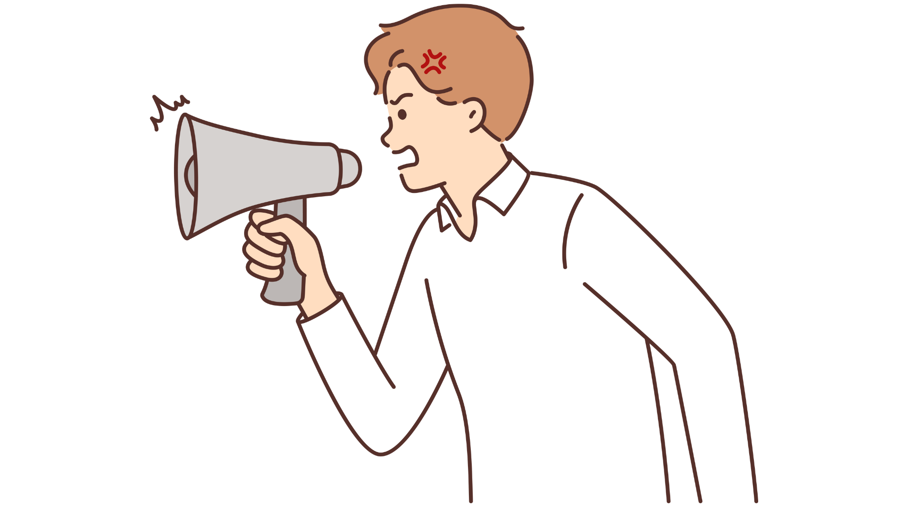
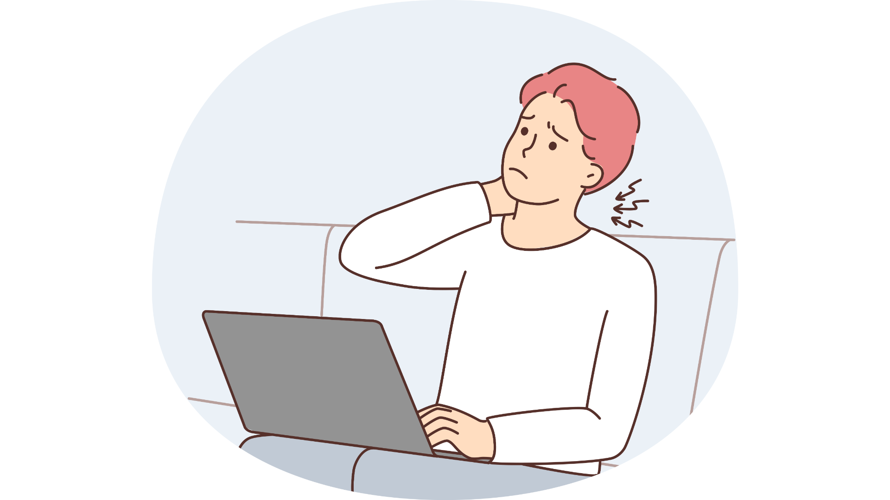

Коммуникативные навыки в строительстве: быстрокурс для ИТРЛокальный архив курса
МИКРОКУРСЫ. 2026 · Коммуникативные навыки в строительстве
Что важно знать про коммуникативные навыки
Вера СафуановаЭксперт строительного контроля с опытом работы в строительной сфере более 15 лет
В нашей работе мы каждый день взаимодействуем с заказчиками и коллегами, защищаем объемы и решаем нестандартные, а порой и конфликтные ситуации. По моему личному наблюдению, около 80% неудач на стройке происходят из-за недопониманий. Выполнить все строительные задачи успешно нам помогают коммуникативные навыки. Они приобретаются с опытом, и на этом курсе вы прокачаете самые важные из них всего за пять уроков. Вам помогут интерактивные кейсы, близкие к реальной работе ИТР, видеоролики, в которых каждый узнает себя, а также памятки и упражнения для закрепления навыков.
Итак, к коммуникативным относятся следующие навыки:
коммуникация;
критическое мышление;
креативность;
эмоциональный интеллект.
Кроме того, к коммуникативным навыкам можно отнести умения принимать решения и работать в команде.
Давайте сразу разберем несколько примеров отсутствия коммуникативных навыков. Определите, какого навыка не хватает инженеру Иванову в следующих ситуациях:
Ситуация 1.
Карточки для самопроверки
Исходные карточки для самопроверки. Локальная страница не оценивает ответы.
1. На строительной площадке заканчиваются строительные материалы, за заказ и контроль поставки которых отвечал инженер Иванов. Вместо того, чтобы быстро предпринять действия для оперативной доставки необходимых материалов, инженер Иванов стал винить во всем отсутствие интернета, плохую сотовую связь, бухгалтерию, прорабов и рабочих. Отсутствие какого навыка указывает на поведение инженера Иванова?
критическое мышление
коммуникация
принятие решений
эмоциональный интеллект
Ответ, отмеченный в данных источника
эмоциональный интеллект

Источник и ограничения. Статическое содержание не проверяет ответы и не воспроизводит анимацию.
Ситуация 2.
Карточки для самопроверки
Исходные карточки для самопроверки. Локальная страница не оценивает ответы.
1. Инженер Петров долго работает на крупном стройобъекте. Заказчик просит срочно направить инженеров отдела на другой объект, т.к. там есть сильные задержки в защите ИД. Инженер Петров знает, что в этом месяце ему нужно сдать большой объем работ и понимает, что все будет делать один. Он рад, что ему никто не будет мешать, несмотря на то, что будет работать 24/7. Какого навыка не хватает Петрову?
критическое мышление
коммуникация
командная работа
эмоциональный интеллект
Ответ, отмеченный в данных источника
командная работа

Источник и ограничения. Статическое содержание не проверяет ответы и не воспроизводит анимацию.
Ситуация 3.
Карточки для самопроверки
Исходные карточки для самопроверки. Локальная страница не оценивает ответы.
1. Инженер Веселов отвечает за изменения в проектную документацию, которая возникает в процессе строительства. Но на этапе сдачи исполнительной документации оказывается, что необходимые изменения внесены не в те разделы проекта, которые относятся к предъявляемым видам работ. Какой навык необходимо развить инженеру?
критическое мышление
коммуникация
принятие решений
эмоциональный интеллект
Ответ, отмеченный в данных источника
коммуникация
Источник и ограничения. Статическое содержание не проверяет ответы и не воспроизводит анимацию.
Отлично! Переходите в следующий урок, в котором вы уже начнете приобретать новые навыки.